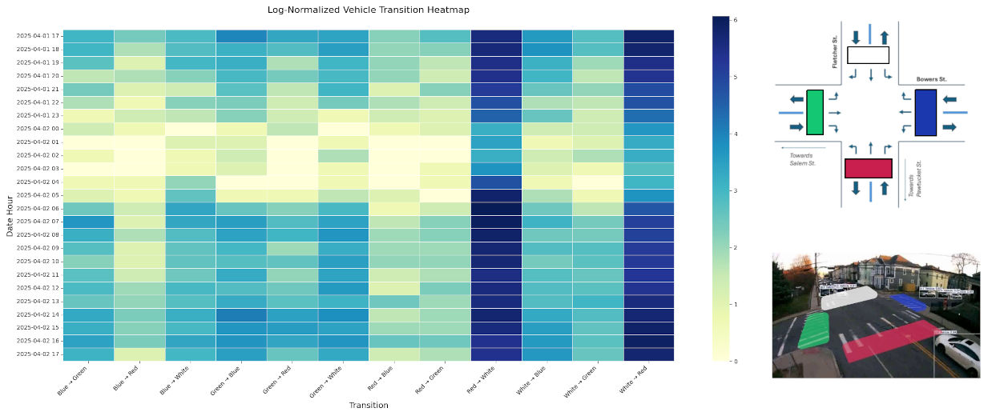
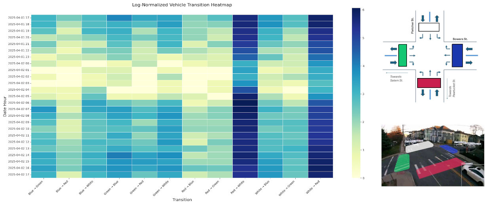

Mobile Traffic Analytics Camera
This portable camera system is designed for short-term deployments to capture video, extract traffic volumes, short-term ADT, TMC summaries, and per-class vehicle counts using a custom deep learning model.
Sample tracking clip.
 

Turning Movement Diagrams (hourly)
Key Features
- Continuous recording for up to 3 days (circular buffer).
- Custom CNN model detects vehicle class, counts, TMC, and trajectories.
- Portable tripod or pole deployment — quick setup and removal.
- Outputs in JSON/CSV with optional visual overlays (trajectories, heatmaps).
Pi Zero 2 Low-Light All-Weather Camera

This project provides a low-power, weatherproof, long-term recording solution using the Raspberry Pi Zero 2 W with a low-light camera module. Built for outdoor deployment, it withstands rain, snow, and extreme temperatures while recording efficiently with automatic file management and minimal power draw.
Applications include wildlife monitoring, security, time-lapse photography, and transportation studies.

Urban deployment (Installed in less than 15 min.)

Visualization of video analysitcs.
Features
- No external WiFi/5G required — Pi Zero 2 W creates its own hotspot.
- Supports multiple camera modules.
- Custom 3D-printed case for durability and weather resistance.
- Tested for 7 days of continuous video recording.
- Flexible recording time — adjustable for long-term use.
- Remote SSH access & local streaming without internet.
- Low power — runs on battery or solar.
- Weatherproof design — reliable in adverse environments.
Version 1 prototype
This system has been tested in urban environments for trip generation data collection under ITE guidelines. It captures vehicles, pedestrians, and cyclists even in low-light conditions, making it ideal for transportation research.
Deployment of Cam v0
Special thanks to Boyang Xiang, Ph.D., Sr. Lab Manager, Civil & Environmental Engineering, UMass Lowell, for designing and 3D printing the custom enclosure.